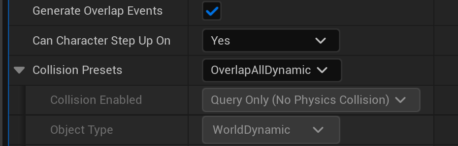
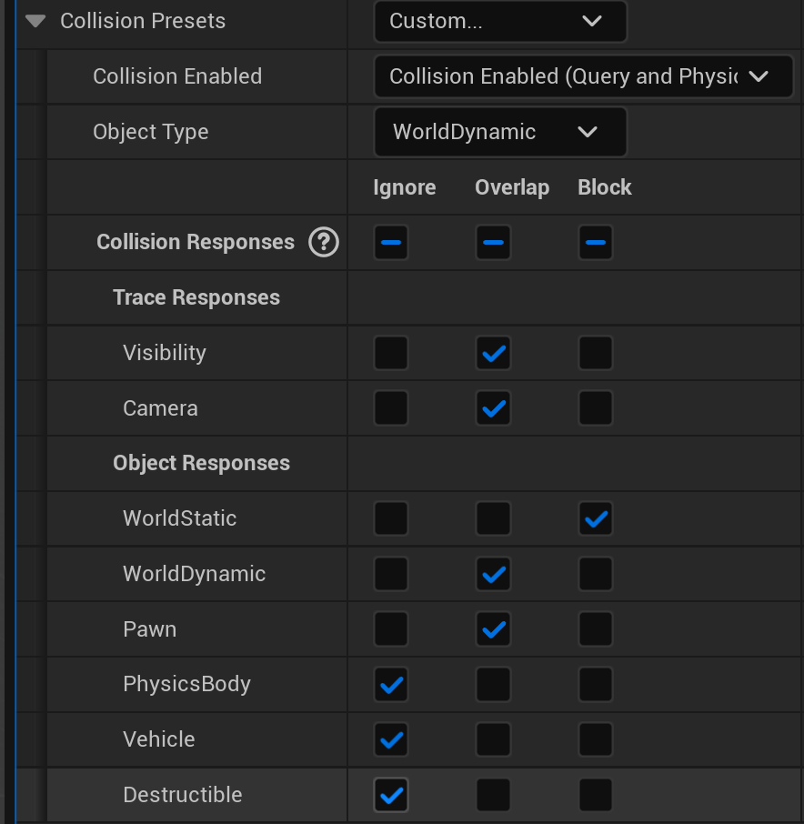

💥 Collision and Physics Interaction
Every game needs to know when things touch. When a player walks into a wall, they should stop. When they step on a button, something should happen. When they enter a room, enemies might wake up. Unreal's collision system handles all of this—determining which objects can pass through each other, which ones block, and which ones generate events when they touch. In this lesson, you'll learn how collision works, how to configure it, and how to respond to collision events in your Blueprints.
🎯 Learning Objectives
By the end of this lesson, you will be able to:
- Explain how collision channels and presets work in Unreal
- Configure collision responses: Block, Overlap, and Ignore
- Create trigger volumes that detect player entry and exit
- Respond to collision and overlap events in Blueprints
- Set up basic physics simulation on actors
- Build a trigger zone that responds to the player
Estimated Time: 50-60 minutes
Prerequisites: Lesson 6.3 (Character Movement)
📑 In This Lesson
Collision Basics
Collision in Unreal determines what happens when two objects try to occupy the same space. Should they stop each other? Pass through? Generate an event? The collision system answers these questions for every pair of objects in your game, every frame.
Collision Components
Collision is handled by collision components—invisible shapes that define an object's physical presence. Common collision components include:
Box Collision: A rectangular box shape. Good for crates, doors, rooms, trigger zones.
Sphere Collision: A spherical shape. Good for pickups, area effects, radial detection.
Capsule Collision: A pill shape (cylinder with hemispherical caps). Used for characters—it's the default collision for the Character class.
Mesh Collision: Collision that matches the shape of a mesh. Can be simple (convex hull) or complex (per-polygon). Complex is expensive but accurate.
Figure: Common collision shapes. Simpler shapes are cheaper to compute.
Simple vs. Complex Collision
Static meshes can have two types of collision:
Simple Collision: Basic shapes (boxes, spheres, capsules, or convex hulls) that approximate the mesh. Fast to compute, used for most game objects.
Complex Collision: Uses the actual mesh triangles for collision. Accurate but expensive. Used sparingly for things like terrain or when precise collision is critical.
In the Static Mesh Editor, you can view and add simple collision via the Collision menu. Common options include:
- Add Box Simplified Collision
- Add Sphere Simplified Collision
- Add Capsule Simplified Collision
- Auto Convex Collision (generates a convex hull)
Collision Enabled Settings
Every component with collision has a Collision Enabled setting that determines what the collision does:
No Collision: Collision is completely disabled. Objects pass through freely. No events generated.
Query Only (No Physics Collision): Generates overlap/touch events but doesn't physically block. Good for triggers.
Physics Only (No Query Collision): Physically blocks but doesn't generate events. Rare use case.
Collision Enabled (Query and Physics): Both blocks and generates events. Default for most objects.
Figure: Collision Enabled determines whether collision blocks movement and/or generates events.
💡 Query vs. Physics
Query refers to the ability to detect overlaps and generate events. Physics refers to actual physical blocking (preventing objects from passing through). Triggers use "Query Only" because they need to detect the player entering but shouldn't physically block them.
Collision Channels and Presets
Not everything should collide with everything else. Bullets might pass through other bullets but hit characters. The player might pass through pickups but not walls. Unreal uses Collision Channels and Presets to control which objects interact with which.
Object Channels
Object Channels define categories of objects. Unreal provides several built-in channels:
- WorldStatic: Static level geometry (walls, floors, terrain)
- WorldDynamic: Movable objects that aren't pawns (doors, platforms)
- Pawn: Player and AI-controlled characters
- PhysicsBody: Simulated physics objects
- Vehicle: Vehicles
- Destructible: Destructible meshes
You can also create custom channels in Project Settings → Collision for game-specific needs (Projectile, Pickup, InteractiveObject, etc.).
Trace Channels
Trace Channels are used for line traces (raycasts), not object collision. Built-in trace channels:
- Visibility: For visibility checks (line of sight)
- Camera: For camera collision/obstruction
Custom trace channels are useful for things like weapon traces that should hit specific object types.
Collision Presets
Rather than configuring collision responses manually for each object, you can use Collision Presets—predefined configurations that set Object Type and responses to all channels at once.
Common built-in presets:
| Preset | Object Type | Behavior |
|---|---|---|
| BlockAll | WorldStatic | Blocks everything |
| BlockAllDynamic | WorldDynamic | Blocks everything, movable |
| OverlapAll | WorldDynamic | Overlaps everything (trigger) |
| OverlapAllDynamic | WorldDynamic | Overlaps everything, movable |
| Pawn | Pawn | Character collision |
| NoCollision | WorldStatic | No collision at all |
| Custom... | Various | Manual configuration |

Figure: The real Collision section of a component's Details panel (UE 5.8) · a Box Collision defaults to the OverlapAllDynamic preset, which drives Collision Enabled to Query Only and Object Type to WorldDynamic, with Generate Overlap Events already checked.
Creating Custom Presets
You can create custom collision presets in Project Settings:
- Go to Edit → Project Settings → Collision
- Scroll to Preset section
- Click New... to create a new preset
- Name it (e.g., "Pickup", "Projectile", "Trigger")
- Set Object Type and responses to each channel
Custom presets appear in the Collision Preset dropdown on all components.
⚠️ Both Objects Matter
Collision is determined by both objects involved. If Object A says "Block Pawn" but Object B (a Pawn) says "Ignore WorldStatic," the result depends on both settings. Generally, if either object says "Ignore," they won't interact. Both must agree to Block for blocking to occur.
Collision Responses: Block, Overlap, Ignore
Each object defines how it responds to each collision channel. The three possible responses are:
Block
Block means the objects cannot pass through each other. Physical collision occurs. This is what you want for walls, floors, solid objects, and characters that shouldn't walk through each other.
When blocking collision occurs:
- Objects stop at the collision point
- Physics forces are applied (if simulating)
On Hitevents fire (if enabled)
Overlap
Overlap means objects can pass through each other, but overlap events are generated. This is perfect for triggers, pickups, damage zones, and detection areas.
When overlap occurs:
- Objects pass through freely
On Begin Overlapfires when overlap startsOn End Overlapfires when overlap ends
Ignore
Ignore means no collision interaction at all. Objects pass through each other silently—no physics, no events.
Figure: Block stops objects; Overlap lets them pass but fires events; Ignore does nothing.
Configuring Custom Responses
To set custom responses per channel:
- Select the component with collision
- In Details panel, find Collision section
- Set Collision Preset to Custom...
- Expand Collision Responses
- Set each channel to Block, Overlap, or Ignore

Figure: With the Custom preset, every channel's response can be set independently to Ignore, Overlap, or Block · here the trigger Blocks WorldStatic, Overlaps WorldDynamic and Pawn, and Ignores PhysicsBody, Vehicle, and Destructible.
Generate Overlap Events
For overlap events to fire, you must enable Generate Overlap Events on the component. This is a checkbox in the Collision section of the Details panel.
Both components involved in the overlap need this enabled for events to fire. If either has it disabled, no overlap events occur.
✅ Overlap Checklist
For overlaps to work, ensure:
- Collision Enabled includes "Query" (Query Only or Query and Physics)
- Generate Overlap Events is checked
- Collision Response to the other object's channel is set to Overlap
- The other object also has Generate Overlap Events enabled
Collision Events in Blueprints
Collision does more than block movement. It can notify your Blueprints the instant two objects interact, letting you run gameplay logic in response. Unreal exposes two families of collision events: overlap events and hit events.
Overlap Events
Overlap events fire when one object enters or leaves another object's query volume. They are the backbone of triggers, pickups, checkpoints, and detection zones. Each collision component exposes two of them:
- On Component Begin Overlap: fires the frame another component starts overlapping this one.
- On Component End Overlap: fires when that overlap stops.
The owning actor also exposes actor-level versions, On Actor Begin Overlap and On Actor End Overlap, which fire when any of the actor's components begins or ends an overlap. Use the component events when you need to know exactly which component was touched; use the actor events for simpler whole-actor detection.
✅ Three requirements for an overlap
An overlap event only fires when all of these are true on both components involved:
- Collision Enabled includes Query (Query Only, or Query and Physics)
- Generate Overlap Events is checked
- The collision response to the other object's channel is set to Overlap
Hit Events
Hit events fire when two blocking objects physically collide. Unlike overlaps, a hit reports the point of contact and the impact force, which makes hits ideal for impact sounds, surface decals, or applying damage on collision. The relevant events are On Component Hit and On Actor Hit.
Hits have stricter requirements than overlaps. The two objects must Block each other, and the moving component must have Simulation Generates Hit Events enabled (a checkbox in the Collision section). Because hits depend on blocking, a "Query Only" trigger never fires a hit event, only overlaps.
Reading the Event Node
Every overlap event node hands you output pins describing what happened. The most useful is Other Actor, the actor that entered the volume. A typical first step is to Cast that actor to your character class to confirm it was the player before running any logic.
| Pin on On Component Begin Overlap | What it gives you |
|---|---|
| Overlapped Component | The component on this actor that was overlapped |
| Other Actor | The actor that entered (Cast this to identify the player) |
| Other Comp | The specific component of the other actor |
| Other Body Index | Which physics body was hit, for multi-body components |
| From Sweep / Sweep Result | Whether a sweep caused it, plus the contact details |
To add an event, select the component in the Components panel, scroll the Details panel to the Events section at the bottom, and click the + beside the event you want. Unreal drops the matching event node into your Event Graph, ready to wire up. You will use exactly this workflow in the hands-on exercise below.
Trigger Volumes
A trigger volume is an invisible region of space that detects when something enters or leaves it, without physically blocking that thing. Trigger volumes are how you build loading zones, checkpoints, cutscene activators, damage fields, and countless other "when the player reaches here, do this" mechanics. There are two ways to make one.
Built-in Trigger Actors
Unreal ships with ready-made trigger actors you can drag straight into a level from the Place Actors panel (Basic category) or the All Classes list:
- Box Trigger · a box-shaped region, the most common choice
- Sphere Trigger · a spherical region, good for radial detection
- Capsule Trigger · a pill-shaped region
- Trigger Volume · a brush-based volume you can shape with geometry editing for non-uniform areas
These actors arrive pre-configured for detection: their collision is set to overlap rather than block, Collision Enabled is Query Only, and Generate Overlap Events is on. You wire their On Actor Begin Overlap and On Actor End Overlap events in the Level Blueprint, which makes them ideal for quick, one-off triggers tied to a specific spot in a specific level.
Custom Trigger Blueprints
When you want a reusable trigger with its own logic, variables, and extra components, build a custom Actor Blueprint with a collision component instead. That is the approach in this lesson's hands-on exercise: an Actor Blueprint with a Box Collision component carries its own overlap logic, so you can drop as many copies into your levels as you like and each one just works.
💡 A fresh collision component is already trigger-ready
Add a Box Collision component to a Blueprint and, verified in UE 5.8, its defaults are:
- Collision Preset: OverlapAllDynamic
- Object Type: WorldDynamic
- Collision Enabled: Query Only (No Physics Collision)
- Generate Overlap Events: checked
A brand-new Box, Sphere, or Capsule Collision component is already set up to detect overlaps, with no configuration required.
Built-in Actor or Custom Blueprint?
Reach for a built-in trigger actor when the logic is unique to one spot in one level and lives naturally in the Level Blueprint. Reach for a custom Actor Blueprint when you want the same trigger behavior in many places, or when the trigger needs to own state and other components. The hands-on below builds the custom version so the pattern is reusable across your project.
Hands-On: Create a Trigger Zone
Let's build a practical trigger zone from scratch. We'll create an area that detects when the player enters and exits, displays a message, and demonstrates the one-time trigger pattern. This exercise covers the complete workflow for trigger-based interactions.
🎯 Exercise Goal
Create a trigger zone Blueprint that: detects player entry/exit, displays on-screen messages, changes a light color when entered, and includes a one-time "first visit" message. This covers overlap events, actor identification, and practical trigger patterns.
Step 1: Create the Trigger Blueprint
- In Content Browser, right-click → Blueprint Class
- Select Actor as the parent class
- Name it
BP_TriggerZone - Double-click to open the Blueprint Editor
Step 2: Add Components
In the Components panel, add:
- Click Add → search for
Box Collision→ add it - Rename it to
TriggerBox - With TriggerBox selected, in Details panel:
- Set Box Extent to X: 200, Y: 200, Z: 100
- This creates a 400×400×200 unit trigger area
Add a visual indicator (optional but helpful for testing):
- Click Add →
Point Light - Rename it to
IndicatorLight - In Details, set:
- Intensity: 5000
- Light Color: Red (we'll change it to green when triggered)
- Attenuation Radius: 500
- Position it at Z: 150 (above the trigger box)
Figure: Component hierarchy and visual representation of the trigger zone.
Step 3: Configure Collision
Select the TriggerBox component and configure collision:
- In Details panel, find Collision section
- Set Collision Preset to
OverlapAllDynamic - Verify Generate Overlap Events is checked ☑
- Collision Enabled should show "Query Only (No Physics Collision)"
✅ Collision Settings Check
Your TriggerBox collision should show:
- Collision Preset: OverlapAllDynamic
- Generate Overlap Events: ☑ Checked
- Collision Enabled: Query Only
Step 4: Create Variables
In the Variables section of My Blueprint panel, create:
HasBeenVisited— Boolean, default False- This tracks if the player has entered before (for one-time message)
PlayerInZone— Boolean, default False- This tracks if the player is currently inside
Step 5: Add Overlap Events
Now add the event handlers:
Add Begin Overlap Event:
- Select the
TriggerBoxcomponent - In Details panel, scroll to Events section
- Click the + next to
On Component Begin Overlap - This adds the event node to your Event Graph
Add End Overlap Event:
- With TriggerBox still selected
- Click the + next to
On Component End Overlap
Step 6: Implement Begin Overlap Logic
Build this logic from the On Component Begin Overlap event:
- Drag from Other Actor pin
- Add
Cast Tonode → select your character class (e.g., BP_ThirdPersonCharacter) - Connect the execution wire from the event to the Cast node
- From the Cast's success execution pin:
Set Player In Zone:
- Add
Set Player In Zone→ set to True
Change Light Color:
- Drag the
IndicatorLightreference into the graph - Drag from it and add
Set Light Color - Set the color to Green (0, 1, 0)
Check First Visit:
- Add a
Branchnode - Get
HasBeenVisitedvariable - Add a
NOT Booleannode (so we check if NOT visited) - Connect to Branch condition
On True (First Visit):
- Add
Print String→ "Welcome! This is your first time here." - Add
Set HasBeenVisited→ True
On False (Repeat Visit):
- Add
Print String→ "Welcome back!"
Figure: Complete Begin Overlap logic with first-visit detection.
Step 7: Implement End Overlap Logic
From the On Component End Overlap event:
- Cast to your character class (same as before)
- On success:
- Set
PlayerInZoneto False - Set Light Color back to Red
- Print String: "Goodbye!"
- Set
Step 8: Compile and Save
- Click Compile in the toolbar
- Fix any errors (check wire connections)
- Click Save
Step 9: Place in Level and Test
- Drag
BP_TriggerZonefrom Content Browser into your level - Position it where the player can walk through
- Add a floor if needed (cube scaled to 10×10×0.1)
- Press Play
Test the following:
- Walk into the trigger zone — light turns green, "Welcome!" message appears
- Walk out — light turns red, "Goodbye!" message appears
- Walk back in — "Welcome back!" appears (not the first-time message)
- Repeat exit/entry — always shows "Welcome back!" now
✅ Exercise Complete!
You've built a fully functional trigger zone with:
- Overlap detection for player entry and exit
- Actor type verification using Cast
- Visual feedback (light color change)
- One-time trigger pattern for first visit
- State tracking with boolean variables
This pattern applies to loading zones, checkpoints, cutscene triggers, and countless other game mechanics.
Bonus Challenges
- Sound Effect: Play a sound when entering/exiting (Add Audio Component, call Play)
- UI Message: Instead of Print String, create a UMG widget that displays on screen
- Multiple Triggers: Create several instances with different messages using exposed variables
- Damage Zone: Apply damage while PlayerInZone is true using a Timer
- Collectible: Destroy the trigger after first overlap (one-time pickup)
Troubleshooting
⚠️ Common Issues
Overlap event doesn't fire:
- Check "Generate Overlap Events" is enabled on BOTH the trigger AND the character's capsule
- Verify Collision Preset is set to overlap (not block or ignore)
- Make sure you're testing with the correct character class in the Cast
Cast always fails:
- The "Other Actor" might not be your character — could be camera, weapon, etc.
- Double-check the class name in the Cast node matches your actual character Blueprint
Light doesn't change color:
- Ensure the IndicatorLight variable reference is connected properly
- Try using "Set Light Color" with a Linear Color (not regular color)
Summary
In this lesson, you've learned how Unreal Engine's collision system works—from basic collision shapes to custom channel configurations to event-driven gameplay. Collision is fundamental to game development, enabling everything from solid walls to pickup items to damage zones.
Key Concepts
Collision Components: Box, Sphere, Capsule, and Mesh collision shapes define an object's physical presence. Simple collision (basic shapes) is fast; complex collision (mesh triangles) is accurate but expensive.
Collision Enabled: Determines what collision does. "Query Only" generates events but doesn't block. "Physics Only" blocks but doesn't generate events. "Query and Physics" does both.
Collision Channels: Categories like WorldStatic, Pawn, and PhysicsBody that organize objects. Each object belongs to a channel and defines how it responds to other channels.
Collision Responses: Block stops objects and fires Hit events. Overlap lets objects pass through and fires Overlap events. Ignore does nothing.
Collision Events: On Begin Overlap fires when overlap starts. On End Overlap fires when it ends. On Hit fires on blocking collision. Use "Other Actor" to identify what collided.
Trigger Volumes: Invisible collision areas that detect entry/exit. Use OverlapAllDynamic preset, enable Generate Overlap Events, and respond in Blueprints.
Collision Quick Reference
| Use Case | Collision Preset | Event |
|---|---|---|
| Solid wall/floor | BlockAll | On Hit (if needed) |
| Trigger zone | OverlapAllDynamic | On Begin/End Overlap |
| Pickup item | OverlapAllDynamic | On Begin Overlap → Destroy |
| Physics object | PhysicsActor | On Hit for impacts |
| Character | Pawn | Various as needed |
Best Practices
- Use simple collision: Box, sphere, and capsule are much faster than mesh collision
- Enable Generate Overlap Events only when needed: It has a performance cost
- Cast to verify actor type: Don't assume what entered your trigger—always check
- Use presets when possible: They're optimized and consistent
- Test both entry and exit: Make sure cleanup logic runs on exit
- Use flags for one-time triggers: Boolean variables prevent repeat execution
Figure: Collision is resolved by checking both objects' channel settings.
What's Next?
Now that you can detect when players enter areas and collide with objects, the next lesson covers Interactable Objects. You'll learn to create objects the player can interact with using a button press—doors that open, switches that activate, items that can be picked up, and more. This combines collision detection with input handling for rich gameplay interactions.
Knowledge Check
Question 1
What does "Query Only" collision enabled mean?
Correct answer: B — "Query Only" means objects can pass through each other (no physics blocking) but overlap and hit events are still generated. This is perfect for triggers that need to detect the player without stopping them.
Question 2
What collision response should you use for a trigger zone that the player walks through?
Correct answer: C — Overlap allows objects to pass through each other while still generating Begin Overlap and End Overlap events. This lets you detect when the player enters/exits the trigger without blocking their movement.
Question 3
Which parameter in an overlap event tells you what actor entered the trigger zone?
Correct answer: B — "Other Actor" is the actor that caused the overlap (the player, enemy, etc.). "Overlapped Component" is your trigger component. You typically cast "Other Actor" to your character class to verify it's the player.
Question 4
What must be enabled on BOTH components for overlap events to fire?
Correct answer: B — "Generate Overlap Events" must be checked on both components involved in the overlap. If either component has it disabled, no overlap events will fire. This is a common source of "my trigger doesn't work" bugs.
Question 5
How do you make a trigger fire only once (like a first-time tutorial message)?
Correct answer: D — All three approaches work for one-time triggers. Boolean flags are most flexible (trigger stays, just doesn't re-execute logic). Destroying works for pickups. Disabling collision works if you want the actor to remain but stop detecting. Choose based on your specific needs.